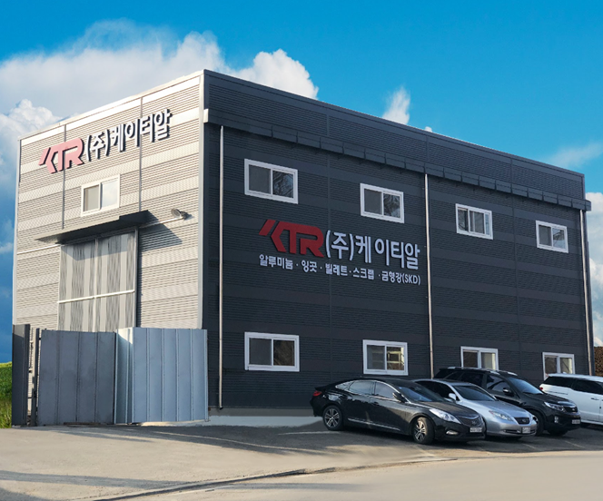
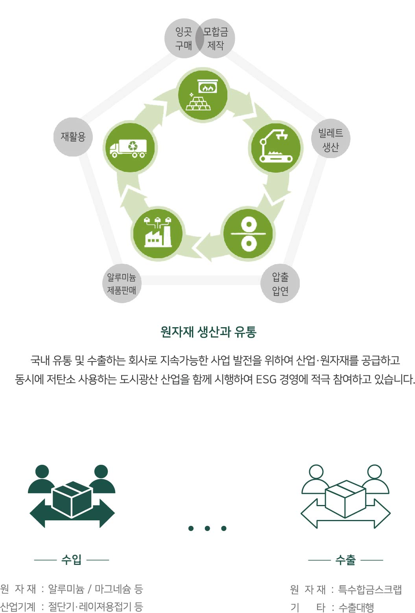

(주)케이티알(KTR, Korea Total Resources)은 2012년 설립 이후 알루미늄·금속 원자재의 수입·가공·유통·수출을 담당해 온 도시광산 전문기업입니다.
케이티알은 알루미늄·마그네슘 잉곳과 빌렛 등 산업 원자재를 안정적으로 공급하는 원료사업부를 중심으로, 규격별 알루미늄 스크랩의 선별·유통과 특수합금 스크랩 수출 대행까지 폭넓은 사업을 전개하고 있습니다.
동시에 폐기물 중간처리 및 수집·운반업을 기반으로 한 저탄소 도시광산 산업을 함께 시행하여, 자원이 버려지지 않고 다시 순환하도록 하는 ESG 경영에 적극 참여하고 있습니다.

잉곳 구매·모합금 제작에서 시작해 빌레트 생산, 압출·압연, 제품 판매, 재활용까지 — 케이티알은 자원이 버려지지 않고 다시 순환하도록 전 과정을 설계합니다.
